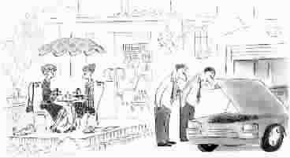

男人在不同年龄段对女人的要求
●钱海燕
3岁
常常抱着我。
给我做好吃的。
喂我。
我尿了裤子不打我。
和我一起睡觉，我可以摸她的乳房。
9岁
允许我抄她的作业。
我考试不及格她不笑话我。
我揪她辫子她不告诉老师。
借橡皮给我用——不借给别的男生用。
我送她的情人节卡片她悄悄收下了。
每周五下午我送她回家，路上买一个冰激凌，一起吃。
她掉了一颗乳牙，真好看。
永远在一起！
18岁
貌美如花。
和她一起走进游泳池，旁边的男孩子会看得眼睛发红、鼻子呛水。
傻乎乎的，可爱！
相信一见钟情。
不嫌我的球鞋臭。
饿了，会泡方便面就可以。
参加通宵舞会从不喊累。
夏天裙子能盖住内裤。
听我讲笑话会哈哈大笑。
自己解决大部分零花钱。
自己去考计算机和线性代数——最好能及格。
在我父母面前显得很文静。
不当着我的面和别的男孩敲定约会日期。
很少吃醋。
很少哭。
打我耳光时，手劲轻一点。
记得我生日。
不要老在一起！
不想结婚。
30岁
聪明。
牛仔裤上不再有破洞。
卸妆后依然美丽。
举止优雅大方，我的同事和朋友都喜欢她。
擅长倾听。
我讲笑话她会微笑。
替我记得我母亲的生日。
尊重我，给我生活和思考的空间。
对我的艳遇不要太敏感……
帮我买领带和衬衫。
有情调，周末做几个好菜，开一瓶红酒。
认为对于爱情，理解比激情重要。
偶尔给我很好的工作建议。
经济独立，但挣得的钱不要比我多太多。
有人追，但好像没有太多男朋友。
不期望我成为盖世英雄或百万富翁。
不要求老在一起。
结婚也可以。
喜欢小孩。
45岁
健康。
穿上旗袍还算好看。偶尔让我坪然心动——比如结婚纪念日当我们在一家餐厅约会时，那栋楼居然没有电梯。
偶尔不唠叨。
偶尔让我发言。
允许我讲笑话。
路上的中学生管她叫阿姨，而不是奶奶。
看见我的秘书裙子很短，也不会买八千块的耳环。
孩子去夏令营的时候，她记得买快餐回来给我吃。
装着没看见我的小肚子。
给我买内裤和戒烟糖。
我忘了她的生日她不再生气。
生气时不摔东西。
摔东西拣不贵的摔。
如果有人给她写情书，我会和她一样高兴。
关心我的体检表胜过工资单。
不再逼我周末和她一起回丈母娘家欢度家庭日。
允许我和一群男性朋友一起去钓鲇鱼，因为她也想和一群女性朋友一起去跳健身舞。
55岁
……没有因为更年期而杀人、放火、攻击国家权力机关和让我坐老虎凳。
65岁
不长胡子。
有两个乳房。
穿我的T恤不嫌小。
让我给她的小外孙擦屁股时态度比较和气。
路上的中学生叫她奶奶，而不是爷爷。
我做的饭她能吃。
我一个笑话讲几遍她都会笑。
允许我养花。
不用我养的鱼喂她养的猫。
看电视时不打呼噜。
她不看电视连续剧时我可以看足球赛。
每天提醒我吃药。
说起我30年前的艳遇已不再大发雷霆。
记得我们的退休金和保险账号。
晚饭时给我倒一小杯葡萄酒。
有一次我尿了裤子，她没有用拐棍打我。
总是在一起。
活着。
记得我是谁。
……永远在一起。
(田岩摘自中国青年出版社《小女贼的黑店》一书，图选自中信出版社《桑贝·我的另一半》)